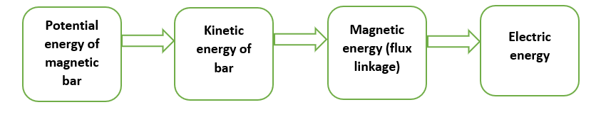

Before the movement of vehicle on speedbreaker magnetic bar is in still position.So,the magnetic bar initally has only potential energy .Whenever the vechile moves on the speed breaker the magnetic bar moves and the potential energy of magnetic bar is converted into kinetic energy . Due to the change in the position of magnetic bar the magnetic flux linkage is changed and magnetic flux is produced.
The rate of change of magnetic flux produces magnetic feild and this magnetic feild can be converted into electrical energy .Hence we can produce electricity.
